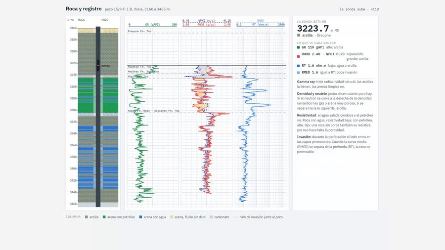
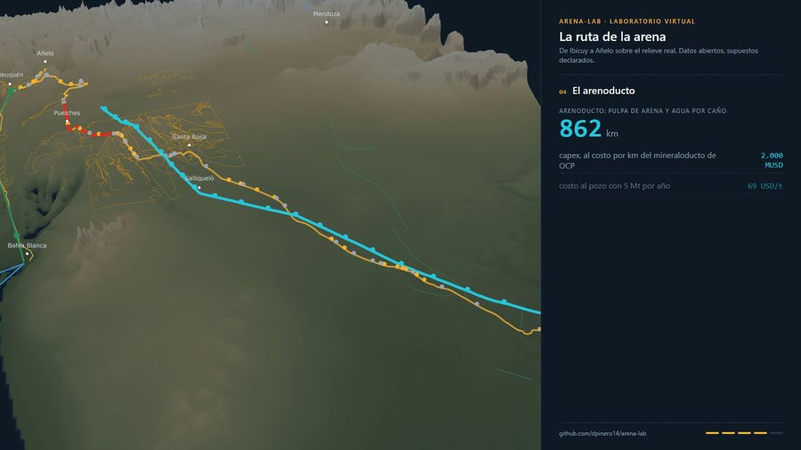
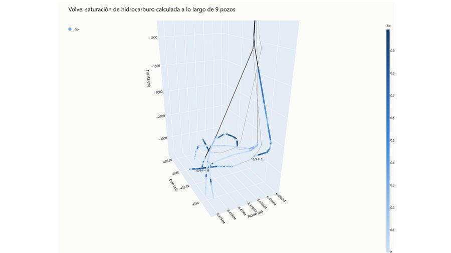
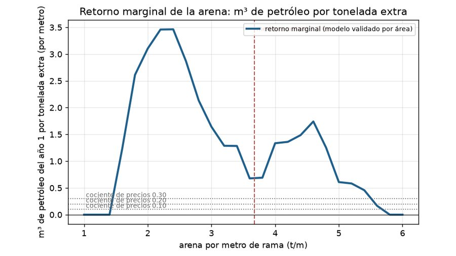
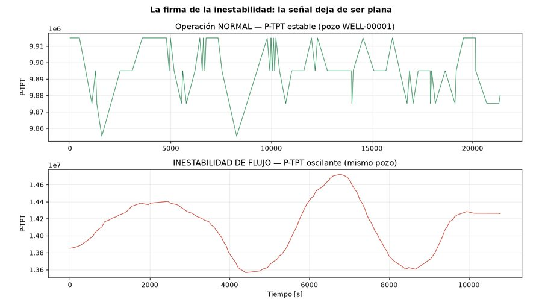
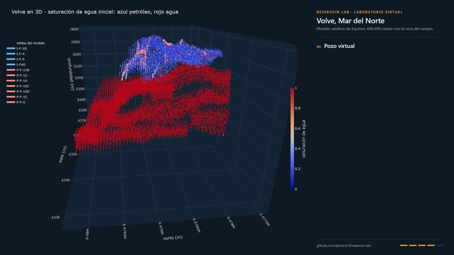
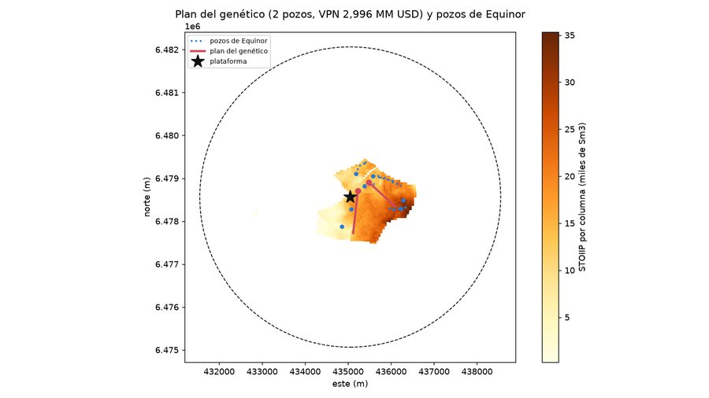
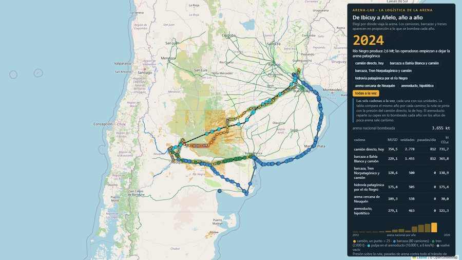

01 · La roca
well-log-lab
Qué es un perfil de pozo y qué se puede leer en él, hasta clasificar facies con validación pozo por pozo. Datos de Volve, el campo que Equinor liberó entero.
Siete proyectos de datos sobre hidrocarburos y minería, hechos con datos públicos y publicados con todo el código a la vista. No son presentaciones: son laboratorios que se abren en el navegador y se tocan.

En orden de publicación. Cada uno tiene su repositorio con los notebooks, los tests y los límites declarados; los que tienen página se abren y se recorren sin instalar nada.

Qué es un perfil de pozo y qué se puede leer en él, hasta clasificar facies con validación pozo por pozo. Datos de Volve, el campo que Equinor liberó entero.

Saturación de agua y metros que pagan en nueve pozos, medidos contra la interpretación oficial de Equinor, con la incertidumbre de Archie a la vista.

Qué explica la producción de un pozo no convencional: diseño de fractura contra producción real, con los datos abiertos de la Secretaría de Energía. Dónde deja de rendir la arena que se agrega.

Detección de eventos no deseados en pozos con el 3W Dataset de Petrobras: inestabilidad de flujo, validada pozo por pozo y no por fila, que es donde casi todos los modelos se engañan solos.

El modelo estático real de Volve convertido en laboratorio: una roca en 3D que se recorre, el petróleo en sitio contra la cifra oficial y el error de interpretación medido contra la verdad conocida.

Un algoritmo genético elige cuántos pozos perforar, dónde y con qué trayectoria sobre el modelo real, con un proxy de drenaje honesto y comparado contra planes simples.

De dónde puede salir la arena de fractura y cuánto cuesta moverla: mapa de prospectividad con la geología de SEGEMAR, la ruta animada año a año y un laboratorio con perillas para comparar camión, tren, río y arenoducto.
Eso es todo lo que hace esta lista: te aviso cuándo publico uno y qué se puede abrir adentro. Sin publicidad y sin reenviar tu dirección a nadie. Te podés dar de baja con un clic.
El alta la maneja Substack, y el formulario está en inglés: escribí tu correo y tocá Subscribe.
Las mismas cuatro reglas en los siete repositorios.
Volve de Equinor, la Secretaría de Energía, SEGEMAR, Vialidad, Petrobras. Nada de datos privados ni de mi trabajo: todo lo que uso lo puede bajar cualquiera.
Por pozo, por área o por grupo, nunca por fila. Es la diferencia entre un modelo que anda y uno que se copió la respuesta.
Cada repo dice qué no puede hacer y con qué supuestos trabaja. Un mapa dice dónde buscar, no si la arena sirve; eso lo dice el ensayo de laboratorio.
Cuando alguien del rubro me corrige, lo corrijo y lo cito con nombre en el README. Varios repos tienen su sección «lo que me corrigieron».